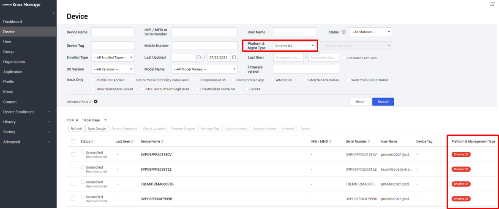

Knox Manage 21.11 release notes
Last updated July 26th, 2023
Knox Manage 21.11 is scheduled for release on November 18, 2021. This update includes new features and platform support, as well as many improvements and enhancements to existing features and functionality.
Highlights
- Android 12 location access
- Android 12 password quality
- Android Zero-touch page
- Android export and import Managed Google Play app configurations
- Windows app management support
- Chromebook and Chrome OS support
- iOS 15 support
- Azure AD through the Graph API support
- Report mailing
- End of support for Internet Explorer 11
Android Enterprise
The following changes apply to Android Enterprise device management.
Android 12 changes
The following changes apply to devices running Android 12.
Location access
With Android 12 and higher, device users can decide whether to allow apps access to approximate or precise location data. Starting with KM 21.11, this affects location tracking on the following types of Android 12 deployments:
- Shared devices with a secondary account
- Employee-owned devices with a work profile
In order for the KM agent to properly report device location data on these devices, you must:
-
Ask device users to grant Precise location data and select While using the app when the KM agent prompts them:
Fully managed devices are unaffected.
Enrollment identifiers
To protect the hardware identity of employee-owned devices, Android 12 and higher doesn’t share identifiers such as the serial number, IMEI, or MEID. As a result, KM 21.11 and higher can no longer read these identifiers from employee-owned devices. Devices previously enrolled through KM are unaffected, as their hardware identifiers have already been obtained. Going forward, KM associates a newly enrolled employee-owned device with a unique enrollment identifier that persists across factory resets. Devices enrolled with the limited enrollment method also use an enrollment identifier.
To view an employee-owned device’s enrollment identifier on the KM console, go to Device > Device Detail > Device Information > Detail > Enrollment Specific ID.
Password quality
Android 12 and higher uses simplified parameters for password quality. Rather than providing multiple granular settings to guarantee password strength, the API uses complexity levels— High, Medium, and Low.
With KM 21.11 and higher, you can set the Password policy according to Android version:
- Android 12 and higher — Set the Minimum Complexity policy.
- Android 11 and lower — Assign granular settings in the Minimum Strength policy.
If you use a single profile to manage the passwords of a mix of devices above and below Android 12, you must maintain both policies in that profile.
The granular Password Lifecycle Settings policy common to Android 6 and higher is not affected.
Screen capture
Starting with Android 12 and higher, system apps built with certain API permissions can capture the screen even if the device has screen capturing disabled by an EMM (such as the System > Screen Capture policy on KM). This mostly affects preloaded system apps developed by device manufacturers. If you are unsure whether the preloaded apps on a deployed device have these permissions, you should verify with the device manufacturer.
Work profile and token-based device enrollment
Previously, token-based enrollment could only set up fully managed devices. With KM 21.11 and higher, the KM token can also set up a work profile. Before signing in to the KM agent for the first time, the device user is now prompted to choose Fully managed device or Work profile on company-owned device.
Zero-touch page
KM 21.11 adds a dedicated page for a linked zero-touch enrollment account, under Device Enrollment > Zero Touch. The page is a frame for Google’s zero-touch portal, through which you can add and manage your account from within the KM console. This addition makes zero-touch management more convenient, as you no longer need to manage the link between a zero-touch account and KM outside of the KM console.
Note
You can only register devices to zero-touch on the actual zero-touch portal. To navigate to the portal from the KM console, under Zero Touch click View devices in the zero-touch portal.
To link a zero-touch account to your KM tenant:
- Go to Device Enrollment > Zero Touch.
- Follow the on-screen instructions to link to the zero-touch account.
Once linked, the Zero Touch page displays the linked zero-touch account, its settings, and the URL to the device registration page on the zero-touch portal itself.
Export and import managed app configurations
Previously, managed configurations for public Managed Google Play (MGP) apps could only be created on a per-assignment basis. Starting with KM 21.11, managed configurations can be exported and imported as CONFIG files for reuse.
To export a MGP app’s configuration:
- Go to Applications, then click an app name.
- Under the Assigned Group / Organization tab, choose an assignment to modify, then click See setting on the right. The assignment settings expand.
- Next to Managed Configuration, click Export > save the CONFIG file to your local system.
To import a configuration into a MGP app:
- Begin assigning a MGP app or modifying an existing assignment of an MGP app.
- When configuring the assignment, click Managed Configuration > Set Configuration.
- In the Managed Configuration dialog, import the configuration:
- Enter a name for the managed configuration.
- Click Import Configuration > ![File Manager](../assets/km-21-11-rn-file-manager.png" alt="" >}} > choose a CONFIG file to import.
- Save the managed configuration.
- Finish assigning the app.
Hardware-backed SafetyNet Attestation service
For Android 8.0 and higher, the SafetyNet Attestation service provides additional hardware-backed security on the KM agent with key attestation. Support for these hardware-backed security features depends on the device’s Android version. The KM console reports the status using these terms:
- Android 8.0 and higher — Basic, Hardware_Backed
- Android 7.1 and lower — Basic
For enrolled Android devices, you can view the SafetyNet Attestation status under Device Detail > Security:
In the log, a SafetyNet Attestation Verification Request provides the device’s SafetyNet status in its Log Data field:
Lock screen message policy addition
KM has a new policy that sets a custom message on the device’s lock screen. You can add lookup items to the message, which substitute for device and user information like username and phone number in the Android environment.
Configure the lock screen message policy under Android Enterprise > System > Set Message for Lock Screen:
- Message — Define the string to display on the device’s lock screen.
- Lookup — Browse and select lookup items.
To add a lookup item to the message, you can:
- Click Lookup to choose an item from the list.
- Manually enter a lookup item in the message field.
Google Play account sub-policy addition
With KM 21.11 and higher, on company-owned devices with a work profile, you can now allow or block access to Google Play based on a Google account allowlist. This feature is a new sub-policy of the Account Modification policy, and it lets you control which personal and managed accounts can make changes through Google Play.
Configure the policy for account-based Google Play access under Android Enterprise > System > Account Modification:
- Set Account Modification to Allow. Choose an appropriate option for the Allow Account in Google Play sub-policy:
- Allow All — All accounts on the device can access Google Play.
- Allow only MGP Account — Only the managed Google Play account can access Google Play.
- Allow MGP and Selected Accounts — The managed Google Play account as well as specific Google accounts can access Google Play. If you choose this option, add the other accounts that need access to the Account AllowList.
Time zone policy enhancement
Starting with KM 21.11, you now have more control over the time settings on company-owned devices with a work profile. Under Android Enterprise > System, the Select Time Zone policy is merged with the Automatic Date and Time policy, and a new Enforce Time Zone option prevents the device user from changing the time or time zone on the device.
Remote alarm command
With KM 21.11 and higher, you can send a Play Alarm Sound command, which sounds an alarm on the device until the user takes action. The alarm sounds regardless of the device’s mute and vibration settings.
Windows
Starting with 21.11, Knox Manage fully supports Windows app management. With this expansion, the KM console can manage both Windows Store apps and internal apps. The KM agent on Windows devices has been updated to incorporate app management.
The following changes apply to Windows device management.
Manage Windows apps
KM can now manage Windows apps. There are two app types, each with different access rules:
- Public apps available through the Windows Store
- Internal apps available through Knox Manage
Internal apps
Managed apps available for download directly from the KM agent are referred to as internal apps. You can configure a profile to automatically install internal apps to enrolled devices. KM supports two Windows installer technologies for internal apps:
- Universal Windows Platform (UWP):
- Appx or APPXBUNDLE file format
- MSIX or MSIXBUNDLE file format
- Windows Installer (MSI):
- MSI file format
Public apps
Managed apps available on the Microsoft Store are referred to as public apps, which you can approve on a device profile, but only the device user can install. The updated KM agent has its own Application Store page, which the device user can browse for all managed public apps. When the user selects a managed app for installation, a deep link takes them to the app’s page on the Microsoft Store. From there, they can install it like normal.
Add and assign apps
The steps to add and apply Windows apps are very similar to the steps for Android and iOS. Go to Application > Add, then for Platform select Windows. Then, select:
- Internal — For internal apps available directly through the KM agent:
- UWP app — Upload the app as an APPX, APPXBUNDLE, MSIX, or MSIXBUNDLE file to the KM console.
- MSI app — Upload the app as a MSI file to the console.
- Public — For public apps available on the Microsoft Store:
- Link to the app’s page on the Microsoft Store.
Application Store on KM agent
With the introduction of Windows app management, we have updated the KM agent to allow for Windows app installation. The new Application Store section in the interface contains three new pages that allow device users to download, install, and remove managed apps:
- All — Browse all managed apps.
- Installed — View managed apps that have been installed.
- Categories — Browse managed apps by category.
Chrome OS
With Knox Manage 21.11, Chrome OS and Chromebook management is in early access for pre-approved users. Contact knoxmanage@samsung.com for approval. General availability will be announced separately in the near future.
For approved users, the KM console can now manage and enroll Chromebooks and Chrome OS apps. Like with Android devices, the KM agent for Chromebooks is available on Google Play.
The following changes apply to Chromebook management.
Set up Chromebook management
Before you can begin managing Chromebooks, you must set up your Google Admin Console and KM:
-
First, you need to upgrade your Chrome license:
- Depending on which license you have, purchase the Chrome Enterprise Upgrade or Chrome Education Upgrade from your Knox reseller or the Google Admin Console.
-
Next, you need to set up an organization and users:
- On the Google Admin console, create an organization and users.
- Register at least one Chromebook with the organization.
-
Lastly, register the Google admin account with KM:
-
On the KM console, go to Setting > Chrome OS > Sign in with Google. The Google accounts page opens.
-
Log in to the Google account.
-
Select all permissions, then click Continue. The browser returns you to the KM console. The Google Authorization Code field is now filled in.
-
Enter the same account for the Google Admin Email Address, then click Authorize.
-
Once set up, all the users, Chromebooks, and policies for each organization synchronize with KM.
Chrome OS management overview
Chrome OS and Chromebook management on KM relies on a link between the managed services on the Google Admin console and the KM console. Due to this fact, there are some important differences you should keep in mind when managing Chrome OS and Chromebooks compared to the other supported OSs on KM:
- Automatic syncing — Organizations, users, and devices are synced from the Google Admin console. You cannot create new organizations or users from the KM console.
- Organization-based deployment — Devices can only be assigned to organizations. Groups are not supported.
- Organization-based profiles — Each organization has an automatically-generated profile associated with it. To set policies for deployments, you must edit the associated profile. You cannot create additional profiles.
- User-based enrollment — Each user account is associated with a Chromebook.
Important
Currently, the User & Browser and App & Extension policies are available. Support for Device policies is planned for a future release.
Here is a quick overview of how to manage Chromebooks and Chrome OS apps on KM.
-
View organization details — You can view information about all organizations synced from Google services. Go to Organization, then set Type to Google. The list filters for all organizations synced from Google.
Click an organization to view its details.

-
View user details — You can view information about all users synced from Google services. Go to Users, then set Type to Google. The list filters for all users synced from Google.
Click a user to view their information.
-
Manage Chromebooks — You can view information about the Chromebooks synced from Google services. Go to Device, then set Platform and Mgmt. Type to Chrome OS. The list filters for Chromebooks synced from Google.

From this page, you can:
-
Factory reset devices
-
Unenroll devices
-
Send lock or unlock device commands
-
Clear user profiles
-
Click a device to view its details:
-
-
Manage profiles for Chromebooks — For each organization synced from Google services, a matching default profile is created on KM. You cannot delete this default profile, but you can modify it to meet your management needs, and then push it to the Google Admin console. Subsequently, any updates to the profile and policies apply to enrolled Chromebooks. To view Chromebook profiles, go to Profile, then set Platform to Chrome OS.
Click a profile to edit its policies.
Manage Chrome OS apps
KM can now manage Chrome OS apps and Chrome extensions. Like with other supported OSs, managed apps are divided between public and internal sources. There are three app types, each with different methods for adding them:
- Managed Google Play — Add an app through an iframe of Google Play on the KM console, the same way you add managed apps in Android. Even though both Android and Chrome OS use the same app store, you can’t create one app configuration and assign it to both types of devices—you’ll need to manage a separate app configuration for each.
- ID — Add an app or a Chrome browser extension by entering a valid identifier from Google Play or the Chrome Web store. To obtain an identifier, see Get Chrome app or extension IDs.
- URL — Add an app by entering its URL.
Note
Adding a managed app in the KM console does not add it to the Google Admin console.
Assign apps
Unlike other supported OSs, you can only assign Chrome OS apps to organizations. Group assignment is not supported.
To assign an app to an organization:
- Go to Organization.
- Choose one or more organizations, then click Application.
- Choose the apps you want to assign, then click Assign > Application.
Set profiles and policies
Like with other supported OSs, a Chrome OS profile and its policies control the settings and behavior of enrolled Chromebooks.
Access an organization’s profile by clicking it on the Profile page. Then, click Modify Policy:
On the Set Policy page, you can set:
- Chrome (User & Browser) policies, which apply to the user account and the system’s main Chrome browser. Chrome (Apps) policies, which apply to apps.
Note
Due to restrictions in the Chrome OS API, there is no policy to control access to Google Play.
iOS
The following changes apply to iOS device management.
iOS 15 support
KM 21.11 and higher supports devices running iOS 15.
Allowed Wi-Fi networks policy addition
With iOS 14.5 and higher, a supervised device can have its Wi-Fi restricted to an SSID allowlist. You can use this feature to better provision and control the network access of enrolled devices. With KM 21.11 and higher you can enable this feature as a policy under Interface > Connect Wi-Fi To Allowed Networks Only:
App contact sharing policy additions
In iOS, by default, managed and unmanaged apps can’t share contact data, so sensitive or private contact information isn’t exposed to potentially insecure apps. With iOS 12 and higher, exceptions can be granted so that managed and unmanaged apps can share contacts. KM 21.11 adds two policies that provide for these exceptions:
- Application > Managed Apps to Write Contacts to Unmanaged Contacts Accounts — Managed apps can save contact data to the unmanaged Contacts app.
- Application > Unmanaged Apps to Read Contacts from Managed Contacts Accounts — Unmanaged apps can read contact data stored in managed apps.
Device restriction policy additions
The following device restriction policies, which provide additional security and access control, are new with KM 21.11:
-
Exchange > Override Previous Password — Overrides the previous user and EAS password with the new EAS password. Supported on iOS 14 and higher devices.
-
Exchange > Control Calendar/Contacts/Mail/Reminder App:
- Enable App — Automatically configure the Calendar, Control, Mail, and Reminder apps to use the Exchange user account for the Calendar, Control, Mail, and Reminder apps, respectively. At least one app must be enabled.
- Allow User to Change — Lets the device user configure the app’s user account.

-
Network Usage Rules > Sim Network Settings — Enables Wi-Fi Assist based on the SIM card identifier (ICCID). You can add multiple SIMs as needed. Use Default System enables Wi-Fi Assist, letting OS switch to using cellular data when Wi-Fi signal strength is poor. Use Cellular Data forces cellular data use at all times. Supported on iOS 13 and higher devices.
-
Wi-Fi > MAC Randomization — Randomizes the device’s MAC address when connected to the Wi-Fi network. Supported on iOS 14 and higher devices.
-
WebClip > Full Screen — Opens the Web Clip as a web app without browser features—no navigation buttons, address bar, search bar, or bookmark features. This option is similar to full-screen mode in a web browser.
-
App Lock > Options > Voice Control — Allows the device to be controlled with Siri voice commands. When enabled, the device user cannot turn off voice control.
Knox services
The following changes integrate recent enhancements to other Knox services.
Sub-admin self-registration
As part of our effort to unify the Knox platform, sub-admins from other Knox cloud services in your organization can now register themselves as KM sub-admins with one click. On the Knox Portal, sub-admins will see Join on the Discover more > Knox Manage card. Clicking the card will register them as a KM sub-admin.
On the KM console, on the Setting > Administrator page, you can see that automatically registered sub-admins have an administrator ID, which consists of their Knox customer ID and the local-part of their email. For example, a sub-admin with the ID 5482734812 and the email admin1@example.com would become 5482734812_admin1. By default, automatically-registered sub-admin accounts start with read-only permissions.
MSP-related audit log additions
Starting with 21.11, KM logs the following new types of events in the MSP category:
| MSP scenario | Action | Event description |
|---|---|---|
| Migration | Approve | Migration requested is approved on KM |
| Migration requested is approved on AMS | ||
| Reject | Migration requested is rejected on KM | |
| Migration requested is rejected on AMS | ||
| Delink | Approve | Delink requested is approved on KM |
| Delink requested is approved on AMS | ||
| Reject | Delink requested is rejected on KM | |
| Delink requested is rejected on AMS | ||
| Change access permission | Access permission is changed from No Access to Full Access | |
Knox Remote Support
Knox Remote Support name change
To improve naming consistency with other Knox services, all instances of the term “Remote Support” have been changed in the console, Web Viewer, and Agent:
| Previous term | New term |
|---|---|
| Remote Support | Knox Remote Support |
| KM Remote Support | Knox Remote Support |
| Knox Manage Remote Support | Knox Remote Support |
Staging users on shared devices
Knox Remote Support is now available for staging users on shared devices. It is unavailable for secondary users.
To install the Knox Remote Support Agent as a staging user:
- On the KM agent, select Service Desk > Download Remote Support App. The app starts downloading and installing.
- After installation, select Run Remote Support App.
File browser
The following enhancements and changes were made to the file browser:
- The session’s downloads now appear in the download manager at the bottom of the browser, instead of the File Download Progress bar.
- You can now view transferred files by clicking Detail next to them.
- Transferring folders is no longer supported.
Other changes
- Removed support for the PC Viewer app. Instead, the Web Viewer service should be used on a web browser.
- When recording a screen capture session, the file name uses the browser’s date and time, rather than the KM server’s.
Knox Browser
The following changes apply to Knox Browser.
Galaxy Tab Book Cover keyboard support
On Galaxy Tab series devices, the Knox Browser now recognizes input from a paired Book Cover keyboard.
Navigation button location
The Knox Browser navigation buttons now sit on either side of the address bar. This resolves an issue where the home button could become hidden.
Page scroll with active keyboard
When the device user brings up the keyboard on the Knox Browser, they can now scroll the page by swiping above the keyboard. This resolves an issue where the keyboard blocked the page from scrolling.
Azure AD Sync Service based on Graph API
Starting with KM 21.11, a new active directory (AD) integration is available—Azure AD through the Graph API. This method currently supports user and group syncing. Only one Azure AD sync service is allowed per KM tenant.
To configure the Azure AD integration, fill the form under Advanced > Azure AD Integration:

Mobile content management
The following changes apply to the Mobile Content Management (MCM) feature of KM.
Automatic content reassignment
Previously, assigned content on a device would not update if the device itself was reassigned. As of KM 21.11, when you transfer a user to another group or organization, or you transfer a device to another group, any differences in assigned content are synced. Content assigned to the previous group/organization is deleted from the device, and content assigned to the new group/organization is downloaded.
Kiosk
The following changes apply to kiosk device management.
Language and time zone device settings
For Kiosk mode, KM 21.11 adds settings to control whether device users can modify the device’s time zone and language. Enable these settings under:
- Multi-app Kiosk — Advanced Setting > Device Setting > Time Zone and Language
- Single-app Kiosk — Device Setting > Time Zone and Language
Reports
The following changes apply to the report feature of KM.
Report mailing
With 21.11, reports have a new feature—report mailing. You can schedule an automated email containing a report’s information to KM admins. Each email links to an Excel spreadsheet of the report that is available for download for 7 days. The downloads are authenticated with a one-time password sent by SMS. Email frequency can be daily, weekly, or monthly. Up to 10 reports can be scheduled.
Note
To preserve system performance and stability, the following reports are not available for scheduling:
- App Information Installed in Device
- Device Location
To schedule a report for emailing:
- Go to Advanced > Report, then click Report Mailing Settings.
- Click Add.
- Complete the Add Report Schedule form:
- Schedule Name — A unique name for the schedule.
- Period — The time interval during which the reports are emailed.
- Frequency — How often to email the report. Choose Daily, Weekly, or Monthly.
- Report — The report to email.
- Sent To — The KM admins who receive the emails.
Parent organization name in report queries
Report queries that contain organization information now include the parent organization name in the Organization Path field. This helps you identify the hierarchy of organizations in reports. The following query types support this field:
- User Basic Information
- Device Basic Information
- Device Detail Information
Other changes
End of support for Internet Explorer 11
Microsoft announced that they will end support for Internet Explorer 11 (IE11) on June 15, 2022. In preparation for this, as of 21.11 (November 18, 2021), the KM console should no longer be accessed on IE11. The KM console is best viewed in Edge, Chrome, or Firefox.
New information on device maps
KM has enhanced information presented in the device map on device location pages. Hovering over a device shows the following new details:
- User Name
- Last Location Scanned
- Tag
- Platform & Management Type
- Model Name
Additionally, devices that have violated KeepAlive settings now appear as red pins.

GPX export for multiple devices
The GPX export feature now supports exporting multiple devices at once. A separate GPX file exports per device.
To export GPX files for multiple devices:
- Go to Device, then select multiple devices.
- Click Check Location > Export to GPX. Choose a location on your system to save the GPX files.
New service admin permissions
To enable greater admin flexibility, you can now grant service admins the following permissions:
- Unenroll & Force Unenroll Device
- Delete Unenrolled Device
Add license name field
To account for scenarios where the name of an MSP license changes, the KM console now supports changing the License Name field. This field is now required.

Apply latest profile and sub-organizations
When you apply the latest profile ( Organization > Apply Latest Profile ), the profile now applies to any sub-organizations that are children of the organization.
Bulk user registration enhancements
- The bulk user spreadsheet template has been updated to include a Group Name column. It is not a required field.
- If you submit a bulk user spreadsheet with invalid Group Name or Organization Code fields, the KM console throws an error message. It no longer registers the affected users into an undefined group.
Miscellaneous enhancements
Finally, with 21.11, KM has received the following simple enhancements.
-
KM console — Added Mac Address as a search field on the Device page.
-
Android Enterprise profiles — Increased the maximum number of apps that you can assign to a profile at a time to 20.
-
Windows devices — Added the option to force unenroll a device.
Resolved issues and improvements
The following reported issues were fixed with KM 21.11.
Hotfixes
- [EMMTECH-213, 00224920] SSO is not working for client
- [EMMVOC-10945, 00223360] edit Tenant company name on TMS Admin
- [EMMVOC-10938, 00223230] Unable to download report with read-only access to KM
Android
- [EMMTECH-185, 00225636] Account Modification policy is not working in Personal area with WPCOD Mode
- [EMMTECH-208, 00222870] Problem with Gallery App
- [EMMTECH-184, 00223444] KM Event Profile for APN with Time & Geofencing
- [EMMTECH-236, 00226389] Kiosk Crashes When Launching Camera via Bookmark
- [EMMTECH-237, 00225058] KM – Mobile Admin portal issue
- [EMMTECH-153, 00224792] License expired status with event based kiosk
- [EMMTECH-146, 00224841] Bookmark crashes when open the camera app
- [EMMTECH-150, 00225014] Hard Factory Reset available even though policy restricted
- [EMMTECH-173, 00225435] Unable to download app report
- [EMMTECH-109, 00223696] Mobile Number is not displayed in Report Section
- [EMMTECH-114, 00223424] Kiosk crashes after device update
- [EMMTECH-99, 00219753] KS license not sync
- [EMMVOC-10931, 00222758] Reset Screen Password on Device Command not Working
- [EMMVOC-10909, 00222254] Customer can’t exit kiosk
- [EMMVOC-10853, 00221416] Unattended Remote Support is not working via KM
iOS
- [00222988] WiFi profile for iOS Missing
Is this page helpful?